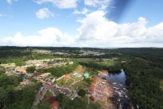
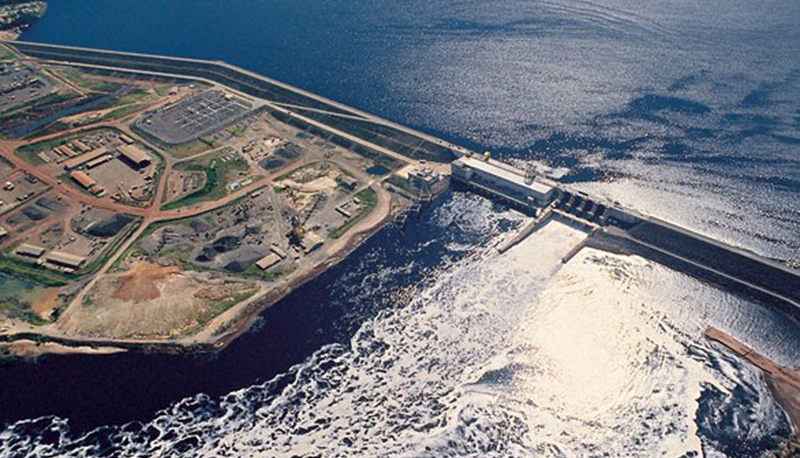
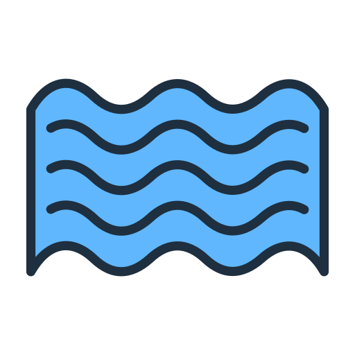

AQUI VOCÊ ENCONTRA:
Presidente Figueiredo
Conheça a rica história de Presidente Figueiredo, um município que encanta com suas belezas naturais e cultura vibrante. Desde sua fundação, a região tem se transformado, refletindo a diversidade e a riqueza de suas tradições.
Vila de Balbina
Balbina, uma pequena vila com uma história marcante, é palco de um dos projetos mais controversos da Amazônia: a Usina Hidrelétrica de Balbina. Por trás de suas águas tranquilas, existem histórias de transformações sociais e ambientais que continuam a impactar a região até hoje.
Cachoeiras
Conhecido como terra das cachoeiras! Presidente Figueiredo, um verdadeiro paraíso natural, convida você a explorar suas maravilhas escondidas entre a exuberante floresta amazônica. Aqui, cada cachoeira guarda uma história única de beleza e mistério...
Corredeiras
Venha se encantar com as corredeiras de Presidente Figueiredo, onde a força das águas desenha cenários de pura adrenalina e beleza...